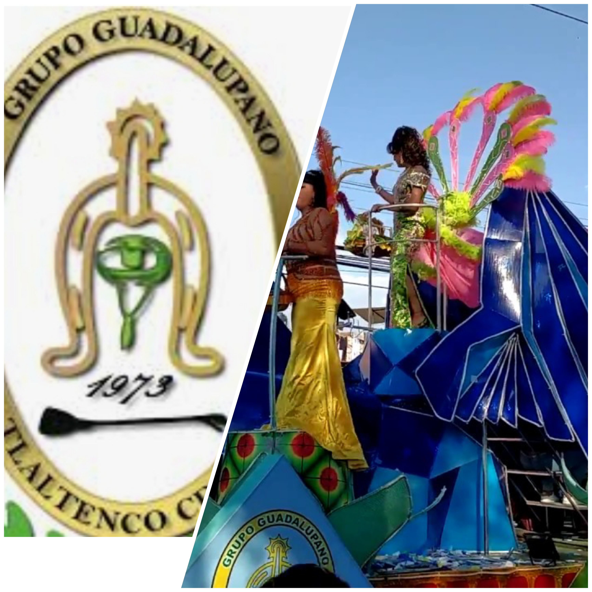

El Grupo Guadalupano se formo en el ano de 1973, siendo los organizadores Jose Castaneda Pena y Ricardo Castaneda Pena, primos ambos. Los amigos simpatizantes de la Sociedad Benito Juarez les prestaron apoyo para que este pequeno grupo se diera a conocer como una comparsa de Carnaval con el nombre de Grupo Guadalupano, la cual desfila el segundo domingo de Cuaresma, con sus tradicionales disfraces.
Vuelve a repetir su actuacion el cuarto domingo de Cuaresma con su vestuario de gala, el desfile de charros, sus charras, el carro alegorico, la reina y sus princesas desfilando por las principales calles del pueblo.En el primer ano en que participaron el Grupo Guadalupano no tuvo reina y solamente desfilo la agrupacion con su rey feo, representado por el joven Pedro Martinez Hernandez, en una carreta tirada por una mula que llevaba como adorno un maguey y un barril de pulque.
DATO CURIOSO
El Grupo Guadalupano lleva participando 23 anos, habiendo presentado 22 reinas y un rey feo hasta 1996. .